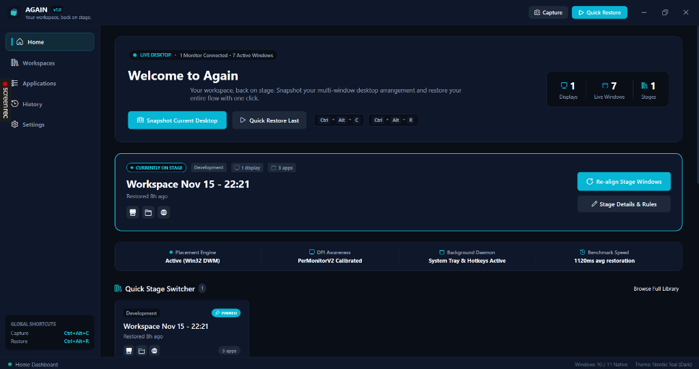
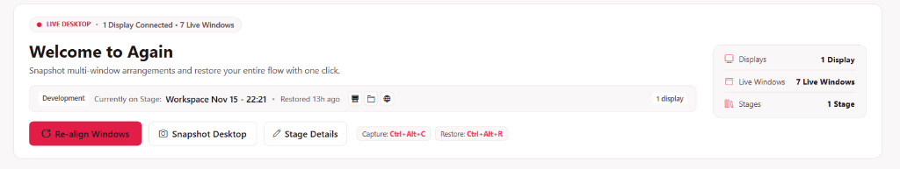
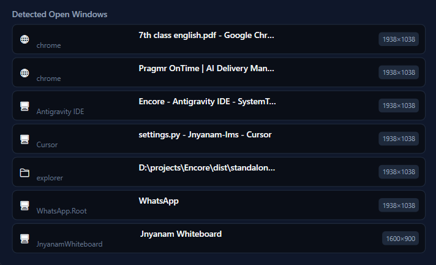
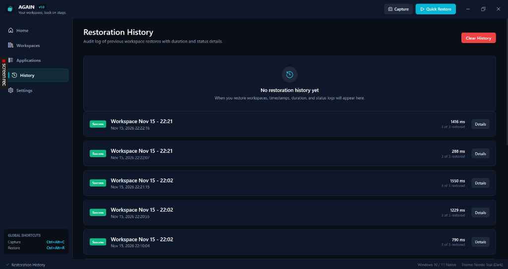

Snapshot multi-window arrangements and restore your entire flow with one click.
Reuses active application processes, merges missing browser tabs, and never clutters your screen.
Again features a bespoke, hardware-accelerated WPF UI designed for high-density Windows environments. Crisp typography, fluid micro-interactions, and instant responsiveness.

Real-time monitor topology status, active HWND counters, Win32 DWM engine health, and single-click stage realignment.

Pristine light theme with optimized high-contrast button styling, compact input bounds, and zero-flicker status badges.

Converts cryptic Win32 device namespaces into human-friendly display labels with live bounds and window dimensions.

Granular audit log tracking restoration timestamps, durations (288ms – 1400ms), and per-process status indicators.
Operates discreetly through the Windows message pump. Press the keys on your physical keyboard right now or click the deck below to test.
Captures all visible top-level windows, DPI coordinates, and multi-tab browser sessions across all monitors in under 120ms.
Restores your last active workspace instantaneously. Existing processes and browser windows are reused without duplication.
Unlike crude shell scripts or generic tools that dump windows onto arbitrary screens, Again is built on native Win32 DWM compositing and process intelligence.
When restoring a workspace, Again checks if applications are already running. If Google Chrome, Edge, Brave, or Firefox is already active, Again strips --new-window flags, queries open tab URLs, and attaches only missing tabs into the existing process before repositioning.
Docking a 4K 175% laptop to 1080p 100% displays often throws windows completely off-screen. Again queries Win32 GetDpiForMonitor and dynamically clamps coordinates to visible monitor work areas.
Stage software that isn't running yet. The built-in catalog scanner discovers Start Menu shortcuts, Registry App Paths, and native executables so you can configure window states before opening.
Zero accounts. Zero cloud dependencies. Zero telemetry. All workspaces, window geometries, and process paths are persisted locally in %LocalAppData%\Again\again.db via embedded SQLite. Your computer stays your computer.
Click any color swatch below to dynamically restyle this entire page to match Again's real themes.
Engineered to run silently in the background tray with negligible memory footprint and instant restoration.
| Metric / Operation | Again Benchmark | Methodology / Engine |
|---|---|---|
| Desktop Workspace Snapshot | < 120 ms | Win32 EnumWindows + GetWindowRect |
| Full Multi-Window Stage Restore | 288 ms – 450 ms | P/Invoke SetWindowPos with DWM Cloaking bypass |
| Active Memory Footprint (RAM) | ~28 MB | Optimized WPF memory pooling & virtualized list controls |
| Background Idle CPU Usage | 0.0% | Event-driven Win32 message hook; zero background polling |
| Database Storage Overhead | < 1 MB | Zero-overhead SQLite with indexed foreign keys |
Free and open-source. Choose between the standard Windows installer, a standalone self-contained executable, or portable binaries.
Recommended for most users. Full Inno Setup installer with automatic Start Menu entry, desktop icon, and system startup option.
Zero installation required. Self-contained executable with embedded runtime. Double-click and run immediately on any Windows 10/11 machine.
Lightweight portable package. Unzip anywhere and carry your workspace manager on a flash drive or development volume.